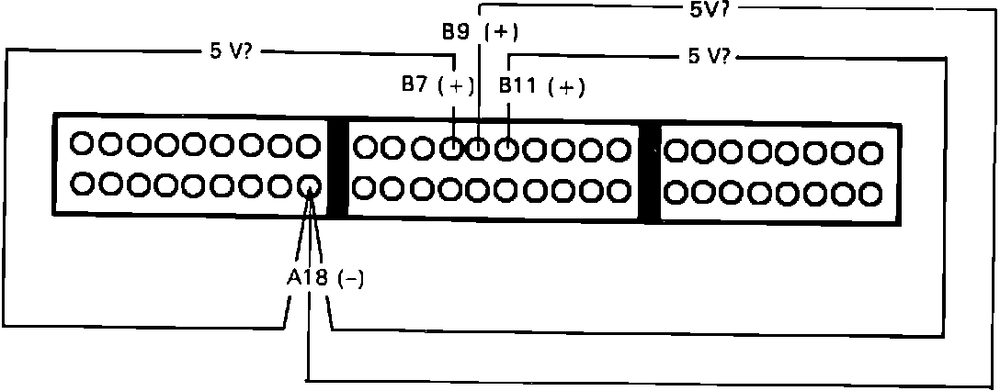
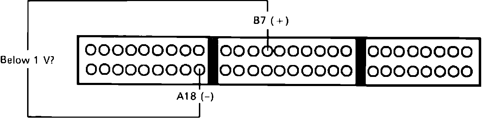
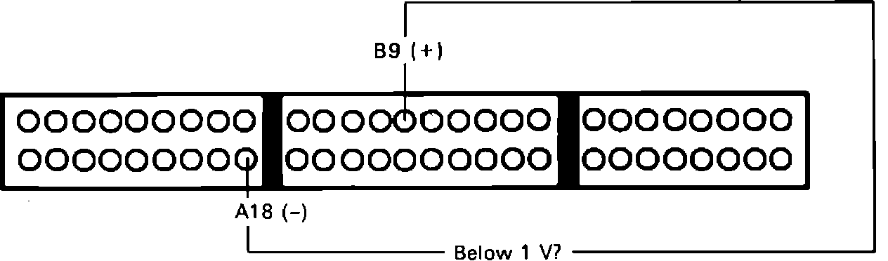
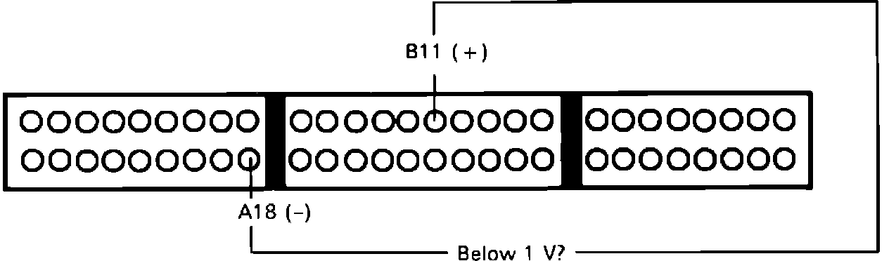

Inspection Procedure
1. Install test harness between ECU and connector. If test harness is not available, carefully backprobe wires at ECU connector.2. Disconnect ECU connector B from main harness only.
Shift Position Sensor Testing:

3. With ignition on, individually measure voltage between ECU terminal A18 and the following pins:
^ B7
^ B9
^ B11
5 volts, proceed to step 5.
Not 5 volts, proceed to next step.
4. Replace electronic control unit. End of test.
Shift Position Sensor Testing:

5. Reconnect ECU B connector.
6. Measure voltage between ECU terminals B7 and A18 in PARK and NEUTRAL positions.
Below 1 volt, proceed to step 8.
Above 1 volt, proceed to next step.
7. Repair open in LT GRN wire between ECU terminal B7 and shift position console switch. If wire checks good, replace shift position switch. End of test.
Shift Position Sensor Testing:

8. Measure voltage between ECU terminals B9 and A18 in position D3.
Below 1 volt, proceed to step 10.
Above 1 volt, proceed to next step.
9. Repair open in GRN/BLU wire between ECU terminal B9 and shift position console switch. If wire checks good, replace shift position switch. End of test.
Shift Position Sensor Testing:

10. Measure voltage between ECU terminals B11 and A18 in position D4.
Below 1 volt, proceed to step 12.
Above 1 volt, proceed to next step.
11. Repair open in GRN/BLK wire between ECU terminal B11 and shift position console switch. If wire checks good, replace shift position switch. End of test.
12. Shift position switch checks good, no further testing required.